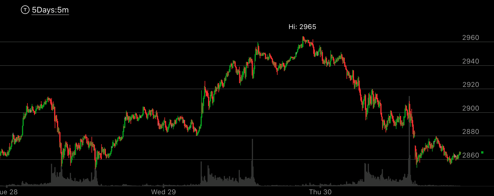

=====================================================================================================
反转的走势
- 反转的走势只有一种，就是加速后，这个加速本身又同时是相对弱势。这样，两段走势，最后加速走势，都是反转走势。

图示：在新高2965前面，创新高2960的时候，它冲高后，立刻拉回。而2965的时候，加速冲高，稍微拉回，然后走平。
这样它出现了加速而加速本身就是下跌相对弱势的走势。这样就说明走势是真的反转了。

图示:1：00的时候，它从底部快速上涨，这个其实就是第一浪上涨，
在越过前面走势的阻力点后，早晨开盘，它猛烈大涨，幅度和速度都超过了第一浪。这样就反转了。
可以看到它反转的时候，在高处形成了下跌的相对弱势。8：00的点更高，下跌速度更慢。
所以即使是一浪反转也是需要相对弱势的。